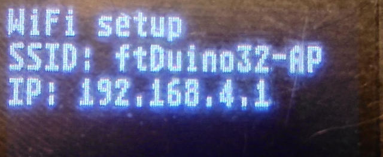
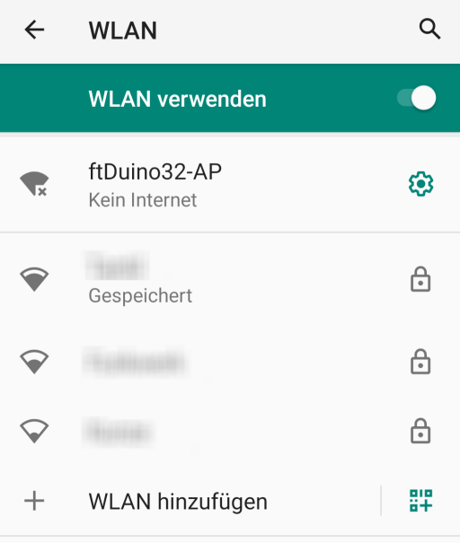
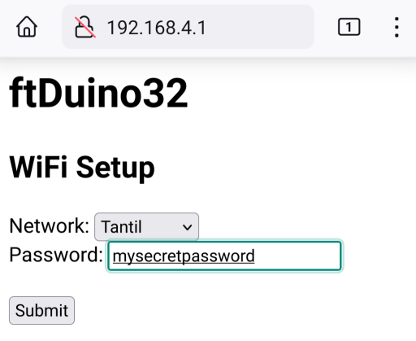
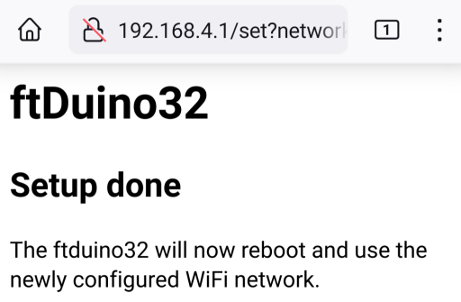
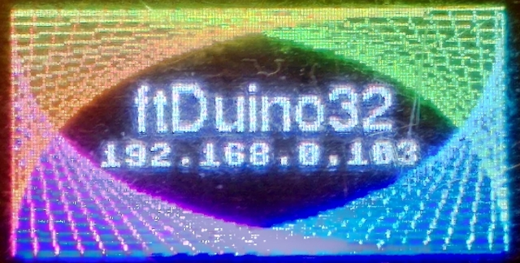

The ESP32 CPU of the ftDuino32 includes WiFi capabilities and the ftDuino32 can be integrated into a wireless network. The use of WiFi needs to be configured on the ftDuino32.
WiFi setup is started by launching the wifi_setup application on the ftDuino32. This will temporarily start a local WiFi network named ftDuino32-AP.
The temporary local WiFi needs to be accessed by the device you are going to use to configure WiFi. E.g. on your smartphone select the WiFi network named ftDuino32-AP.
You will be notified that this network does not give you internet access as it is limited to the ftDuino32 only. This is ok as this network is only used during setup.
Once connected to the ftDuino32-AP network point your browser to the address the Wifi setup applocatgion on the ftDuino32 displays. In this case it's 192.168.4.1. So used the browser to connect to http://192.168.4.1. This should result in the network config being displayed.
Select the WiFi network you are going to use with the ftDuino32 and enter the password of that network. Finally select Submit.
The selected WiFi network will be submitted to the ftDuino32 and stored in its internal configuration.
Once the configuration is stored, the ftDuiono32 will restart and try to connect to the newly configured network. If successful the IP adress given by that network will be displays underneath the ftDuino32 logo.
The ftDuino32 is now integrated into your Wifi network and the local network used during configuration is now being disabled.
The ftDuino32 is now accessible from other devices in that WiFi network and can itself connect to services in the internet.